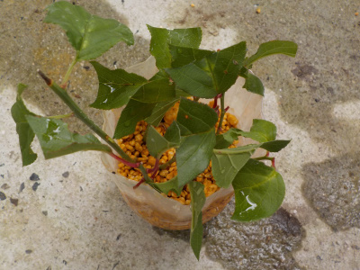
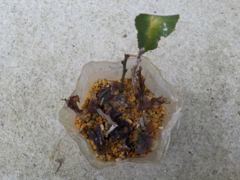
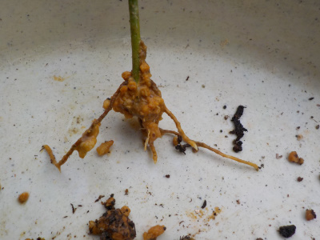
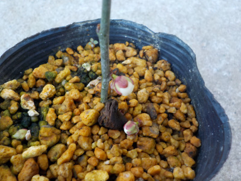
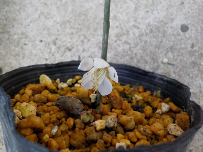
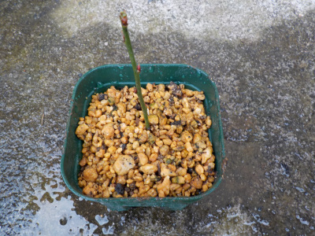
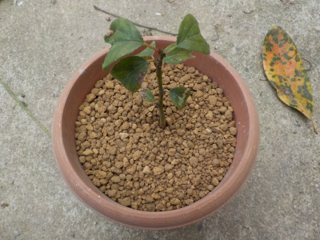
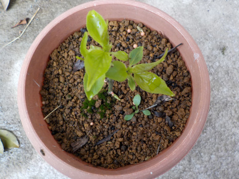
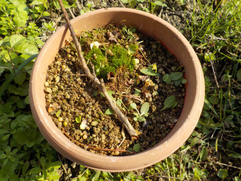

更新日 : 2019/06/23

基本挿し木するものではありませんが、試にやってみました。
どうなるでしょうね。
更新日 : 2019/09/28

1本生き残りました。
梅はペットボトルの密閉で挿し木が出来ることがわかりました。

根っこもちゃんと伸びています。
花梅は挿し木できるけど、実梅は挿し木で増やせないって情報を何かで読んだことがあったので無理かと思っていたんですが、挿し木出来るんですね。
確率は低いですが、ペットボトル1本で水やりの必要なしのフリーメンテナンスなのでやる価値有です。
また春になったらやろうと思ってます。でも梅の木を植えるスペースがないかな。
更新日 : 2020/02/15

蕾が2つあったみたいで、1つは落ちていました。
元の木はずいぶん前に開花しているので、だいぶ遅いです。
残る蕾は咲くところまでいくかな？
更新日 : 2020/02/23

蕾が落ちずに花が咲きました。
うれしいです。
毎年咲かせたいですね。
更新日 : 2020/03/08

大きくなるように、ちょっと大きなプラ鉢に植え替えしました。
早く葉っぱが出て欲しいです。
更新日 : 2020/10/04

挿し木の梅は夏の間あまり成長しませんでした。
環境を変えてみようと、鉢のサイズを大きくしました。
冬までにちょっとでも大きくなって欲しいです。
更新日 : 2021/03/14

2月は梅の挿し木のホームページを見る人が多かったみたいです。
梅を挿し木で増やしたいって思う人が他にもいるんですね。
花が咲いているのを見て増やしたいって思うのかなー。
更新日 : 2021/10/31

挿し木の梅の木が枯れました。
テッポウムシかな？木の中から食べられていました。
ガッカリです。次からは農薬を塗ろうと思います。
挿し木が出来たところで育たないと意味がないのである。
【おいしいものを食べよう。】【たくさん寝よう。】
【ソロ活をしよう!】【季節感のあることをしよう。】【動画視聴はほどほどに。】【当サイトの全てのコンテンツは無断転載禁止です。】